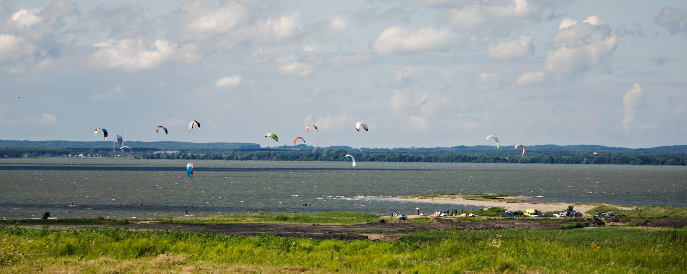
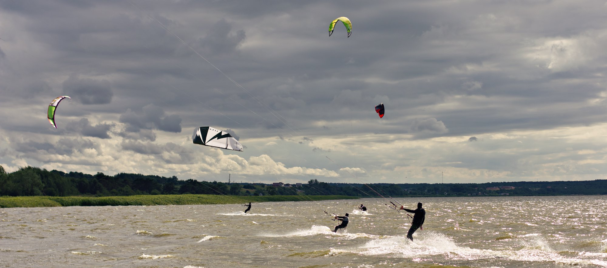
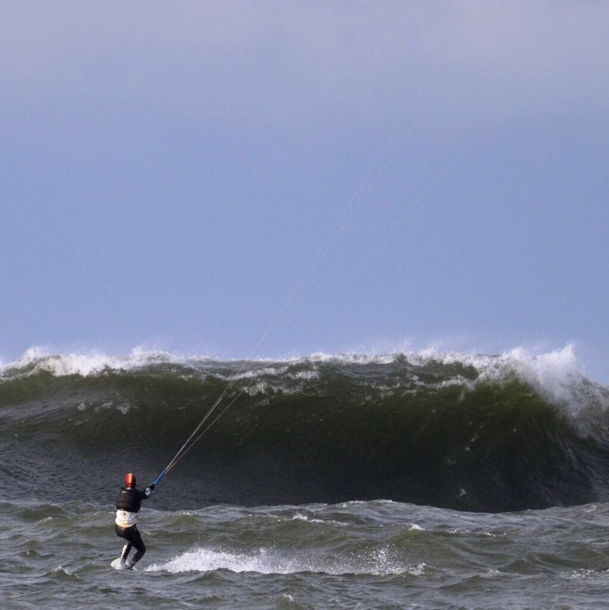

Кайтсерфинг в Калининграде
Полезные материалы
«Ветреные люди»
, чат в Telegram, тут все общаются
Метеостанции Калининграда
Вебкамера Зеленоградск
(променад у спота Амбар)
Обзор кайт и сёрф спотов Калининграда
— ветровая статистика, регионы, описание спотов
Правила спота Кайтбич
Кайтфорум Kite4you
Инструктора, школы, сервис
Городничев Олег "Дельфин"
, инструктор по кайту
Загораев Артем,
Kite4you
, инструктор по кайту
Балякин Александр,
Торгуга
, инструктор по вейку за катером, вейксерфинг, кайт, SUP
Липовская Юлия, инструктор по кайту
Исаков Евгений,
König Surf Club
, инструктор по сёрфингу, SUP
Аня Матвеева,
Baltic Sup & Surf
, инструктор по сёрфингу и SUP
Kite Clinic
, ремонт кайтов, шейпинг сёрф досок
Левинец Владимир, виндсерфинг, ремонт кайтов
Wake Family 39
, вейк за лебедкой
Василий Александрович
, таксист на Косе
Видео
Кайтсерфинг в Калининграде
, 2012
Серфинг в Зеленоградске
, 2020
Магазины снаряжения
Hydrosfera.pl
. Удобно общаться на английском, с удовольствием дают скидки, особенно при оплате наличными. Можно платить пластиковыми картами, но только в магазине в Władysławowo.
abcsurf.pl
 
Кайтбич — самый популярный спот в регионе, 2011

Самая большая волна приходит в Балтийск